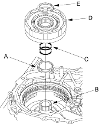
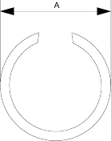
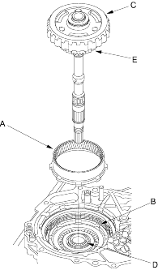

- If the clearance is out of the service limit, select a new reverse brake end plate from following table, then recheck.
NOTE: If the thickest end plate is installed, but the clearance is still over the standard, replace the reverse brake discs and plates.
REVERSE BRAKE END PLATE
| Plate No. | Part Number | Thickness |
| 1 | 22551-P4V-003 | 3.6 mm (0.142 in.) |
| 2 | 22552-P4V-003 | 3.8 mm (0.150 in.) |
| 3 | 22553-P4V-003 | 4.0 mm (0.157 in.) |
| 4 | 22554-P4V-003 | 4.2 mm (0.165 in.) |
| 5 | 22555-P4V-003 | 4.4 mm (0.173 in.) |
| 6 | 22556-P4V-003 | 4.6 mm (0.181 in.) |
| 7 | 22557-P4V-003 | 4.8 mm (0.189 in.) |
| 8 | 22558-P4V-003 | 5.0 mm (0.200 in.) |
- After replacing the reverse brake end plate, make sure that the clearance is within tolerance.
- Install the snap ring retainer (A) over the drive pulley shaft (B).

- Wrap the drive pulley shaft splines with tape to prevent O-ring damage. Install new O-ring (C) in the drive pulley shaft O-ring grooves, then remove the tape.
- Install the forward clutch (D) on the drive pulley shaft, then install the snap ring (E) to secure the forward clutch.
- Verify that the snap ring outside diameter is 41.4 mm (1.63 in. ) or less.

- Install the ring gear (A) on the forward clutch (B).

- Install the input shaft/planetary carrier assembly (C) through the drive pulley shaft (D) with aligning the sun gear (E) to the clutch discs and aligning the planetary carrier to the reverse brake discs.